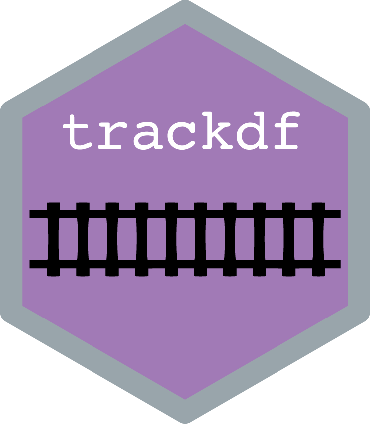

Please submit all suggestions and bug reports here. Thanks!
1 - Description 
trackdf is a R package that aims to standardize and accelerate the processing of data describing animal trajectories captured in the lab (e.g., video tracking) or in the field (e.g., GPS trackers). trackdf provides a data frame-like class based on the popular tibble class and is compatible with both base R and most of the functions from the tidyverse (e.g., dplyr, ggplot2).
trackdf is a work in progress. Functions are not yet in a stable state and are likely to change as the package gets developed.
3 - FAQ
How can I help?
trackdf is an open-source project, meaning that you can freely modify its code and implement new functionalities. If you have coding skills, you are more than welcome to contribute new code or code improvement by submitting pull requests on the GitHub repository of the project at: https://github.com/swarm-lab/trackdf. I will do my best to review and integrate them quickly.
If you do not feel like contributing code, you can also help by submitting bug reports and feature requests using the issue tracker on the GitHub repository of the project at: https://github.com/swarm-lab/trackdf/issues. These are extremely helpful to catch and correct errors in the code, and to guide the development of trackdf by integrating functionalities requested by the community.